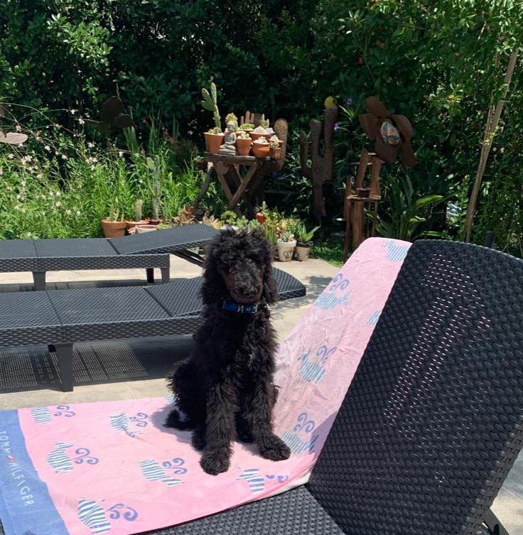
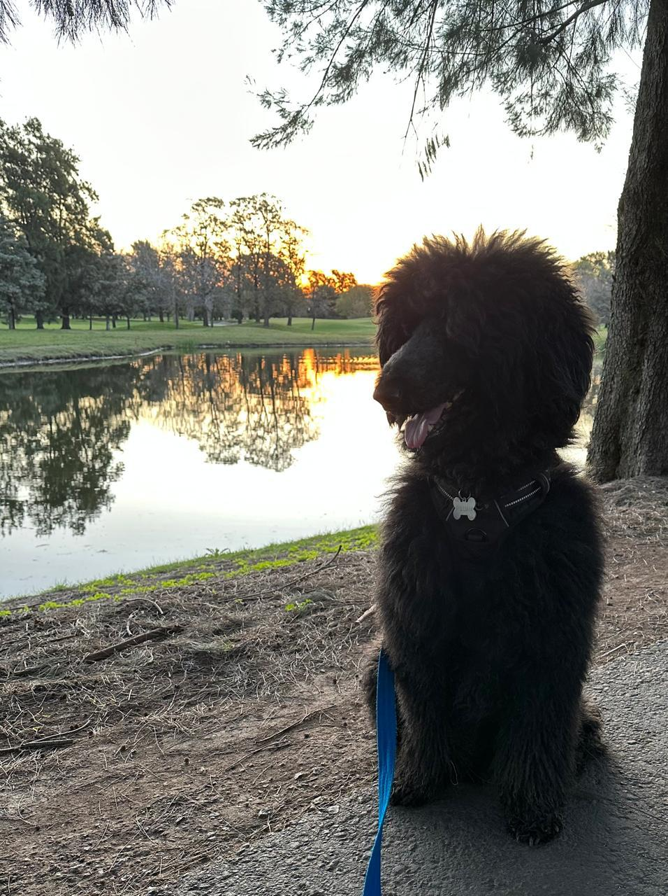

Lord William of Pawkingham, previously known simply as Lord Pawkingham, graced the halls of Pawkingham Palace with his presence since his earliest days. Born on a crisp autumn day on October 7th, his arrival marked the beginning of a new era of elegance and sophistication within the palace walls.
From a young age, Lord William of Pawkingham displayed an unparalleled intelligence and regal demeanor that set him apart from his peers. His keen wit and natural charm endeared him to all who crossed his path, earning him the respect and admiration of both dogs and humans alike.
As he grew, Lord William of Pawkingham's passion for the palace and its inhabitants only deepened. He dedicated himself to exploring every nook and cranny of the estate, seeking out new adventures and treasures at every turn. His boundless curiosity and unwavering determination made him a beloved figure among the palace's residents.